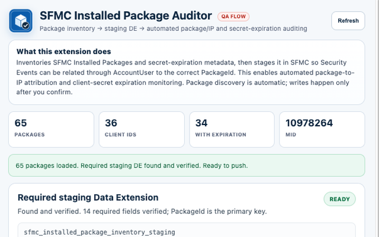

Inventory Salesforce Marketing Cloud Installed Packages and stage package metadata for automated API/IP attribution and client-secret expiration monitoring.
Salesforce Marketing Cloud does not provide a supported public REST or SOAP endpoint that returns the complete Installed Package inventory and all of the package metadata needed for this governance workflow, including package identifiers, Client IDs, and client-secret expiration metadata.
SFMC Installed Package Auditor solves that gap by using the user's existing authenticated SFMC browser session to read first-party package metadata already available to that authorized session. It does not ask users to paste OAuth client secrets into the extension and it does not send package inventory to an external developer service.
PackageId as the primary key.The staged inventory becomes the package metadata layer for downstream Security Event and IP auditing. The intended relationship is:
SecurityEvent.employee.userName → AccountUser.UserID → AccountUser.CustomerKey → Installed Package PackageId
This allows API source IPs and authentication activity to be associated with the corresponding Installed Package, Client ID, package name, and secret-expiration date.
Package discovery, DE detection, schema validation, and folder discovery are read-only. Writes occur only after the user explicitly confirms the action. The write path can create the required Data Extension and upsert package rows. The extension contains no DELETE, ClearData, Data Extension replacement, or stale-row deletion behavior.
Actual client-secret values are not collected or stored.
